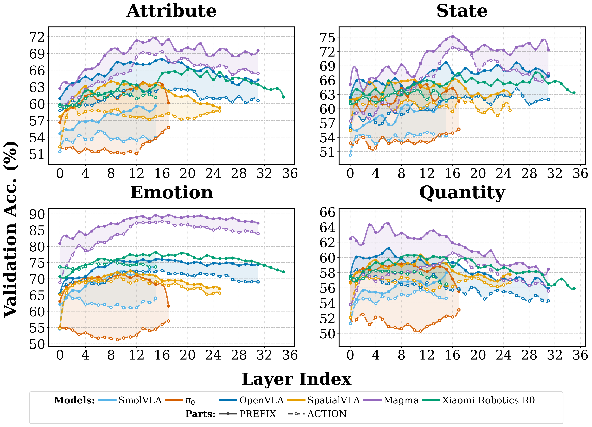

Abstract
Embodied Vision-Language-Action (VLA) models are typically obtained by fine-tuning powerful pretrained VLMs on robotics data, yet it is unclear how much commonsense and factual knowledge they retain after adaptation. Failures on knowledge-sensitive tasks are ambiguous, conflating missing knowledge with poor generalization of low-level control. We introduce Act2Answer, a lightweight protocol that adapts VLM knowledge benchmarks to VLA evaluation by requiring agents to answer through action. Each question becomes a short tabletop episode where the agent performs a single object-placement action to select among candidate answers, yielding an action-grounded success rate with reduced control confounds. We curate a test suite of such environments across diverse commonsense and world-knowledge categories and introduce layerwise intent probing to localize answer-relevant information across the VLM backbone and action head. In a large-scale study of 9 VLA models and 9 VLM baselines, we systematically rank models across categories, finding that VLAs show solid performance on simple concepts while exhibiting larger gaps on richer semantic categories relative to their source VLMs, that VQA co-training improves knowledge retention, and that answer-relevant signals peak in middle VLA layers but attenuate upper.
Why Act2Answer?
VLA evaluation is usually task-success centric: if a policy fails, it is difficult to know whether the problem came from perception, low-level control, planning, or missing knowledge. Act2Answer isolates a sharper question: can the model use relevant commonsense or world knowledge to choose an action?
Instead of asking a model to decode a textual answer, each VLM benchmark question is converted into a short tabletop episode. The agent sees two visual answer options and must move a cube onto the correct answer plate. This keeps the setting embodied while reducing long-horizon control confounds.
Action-as-Answer Episodes

Example Act2Answer episodes. Each episode is built from a VLM benchmark question. The embodied agent must interpret the instruction and control the robot arm to move the cube onto the correct answer plate.
Benchmark Construction

Data curation pipeline. Act2Answer selects, filters, normalizes, and converts VLM benchmark items into embodied binary-choice episodes with consistent answer placement.
The suite adapts established VLM benchmarks into a shared embodied interface. Questions are rewritten into short robot instructions, answer candidates are grounded as visual plates, and spatial swaps are used to reduce fixed side preferences.
Physical: object attributes, states, color, shape, symmetry, affordances, and physical plausibility.
Temporal: event order, duration, time reasoning, and short-horizon prediction.
Quantitative: counting, magnitude comparison, and basic resource reasoning.
Biological: living-world distinctions, vulnerability, animal and plant needs.
Social: emotions, roles, intentions, relations, and interaction context.
Normative: safety rules, public information, traffic rules, and contextually appropriate behavior.
Layerwise Intent Probing
Beyond task success, Act2Answer measures whether answer-relevant information is linearly recoverable from internal VLA representations. A probe predicts the selected option from each layer, helping localize whether knowledge remains in the backbone and whether it survives into the action pathway.

Probing results. Prefix labels indicate representations from the VLM component, while Action labels indicate representations from the action component. Answer-relevant signals often peak in middle layers and attenuate toward later action layers.
Additional Examples

Social and biological categories. Emotion, celebrity, and living-world examples.

Temporal and normative categories. Time, traffic, and public-information examples.

Physical and quantitative categories. Attribute, state, color, symmetry, shape, and counting examples.
BibTeX
@article{TBA,
TBA
}